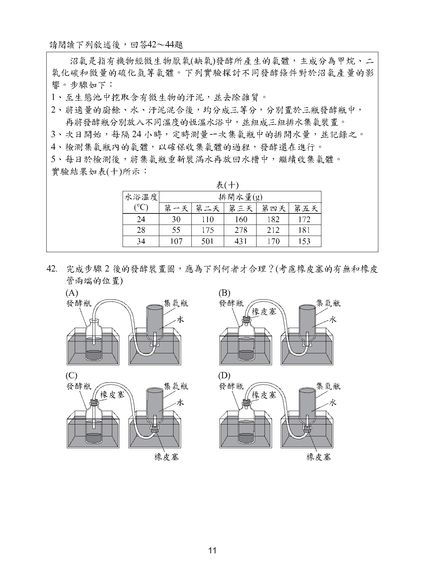
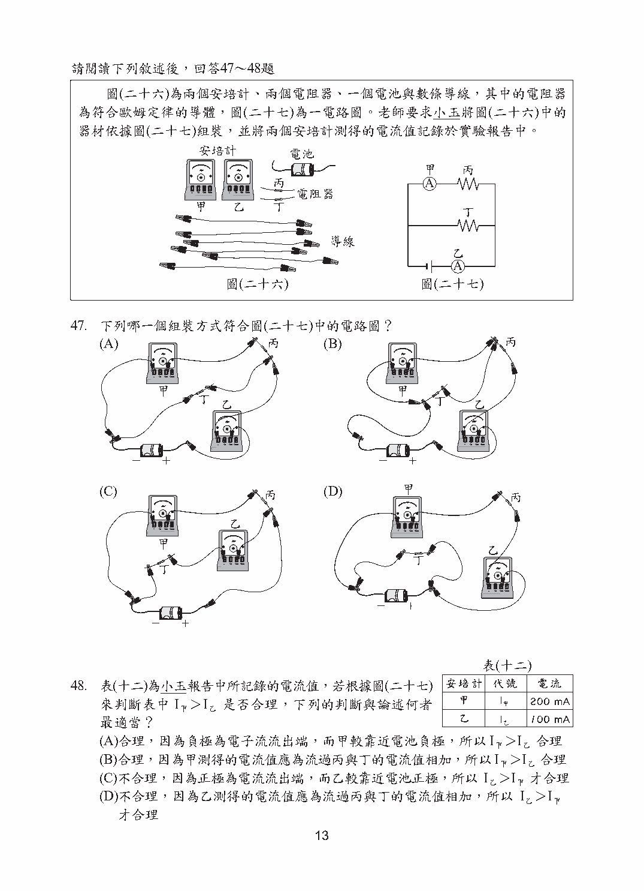

第 28 題對應：八上5-2
小禮將一杯20℃的純水分為甲、乙兩杯，甲、乙兩杯純水的質量分別為M甲、M乙，他將兩杯水分別以相同的熱源加熱，並記錄其加熱時間與上升溫度。已知M甲：M乙＝3：2，若熱源發出的熱量完全被水吸收，且水的蒸發忽略不計，則水的上升溫度與加熱時間之關係圖最接近下列何者？
此題選項為圖形，請參閱下方官方題本頁面圖片作答。
正解 (B) 兩杯皆為純水(比熱相同)，但質量不同(M甲：M乙＝3：2)。相同熱源提供相同功率的熱量時，質量較大者升溫較慢(達到相同溫度所需時間較長)，故質量較大的甲杯升溫速率應較乙杯慢，圖形應呈現甲杯溫度上升較緩、乙杯較快的關係。
第 42 題對應：八上2-3
沼氣是指有機物經微生物厭氧(缺氧)發酵所產生的氣體，主成分為甲烷、二氧化碳和微量的硫化氫等氣體。下列實驗探討不同發酵條件對於沼氣產量的影響：至生態池中挖取含有微生物的汙泥，將適量的廚餘、水、汙泥混合後，均分成三等分，分別置於不同溫度的恆溫水浴中，並組成三組排水集氣裝置。完成步驟2後的發酵裝置圖，應為下列何者才合理？(考慮橡皮塞的有無和橡皮管兩端的位置)

此題選項為圖形，請參閱下方官方題本頁面圖片作答。
正解 (B) 排水集氣裝置須確保發酵瓶內產生的氣體能經由橡皮管導入集氣瓶、將集氣瓶內的水排出；同時發酵瓶須以橡皮塞完全密封以維持厭氧(缺氧)環境，避免外界空氣進入而影響微生物的厭氧發酵，需依此原則判斷正確的裝置組裝方式。
第 47 題對應：九上4-2
圖(二十六)為兩個安培計、兩個電阻器、一個電池與數條導線，其中的電阻器為符合歐姆定律的導體，圖(二十七)為一電路圖。老師要求小玉將圖(二十六)中的器材依據圖(二十七)組裝。下列哪一個組裝方式符合圖(二十七)中的電路圖？

此題選項為圖形，請參閱下方官方題本頁面圖片作答。
正解 (A) 需依電路圖(二十七)中電池、電阻器、安培計等元件的串並聯連接方式(如安培計應串接於待測電路中)，找出實際器材組裝後的電路連接關係與電路圖完全相符的選項。